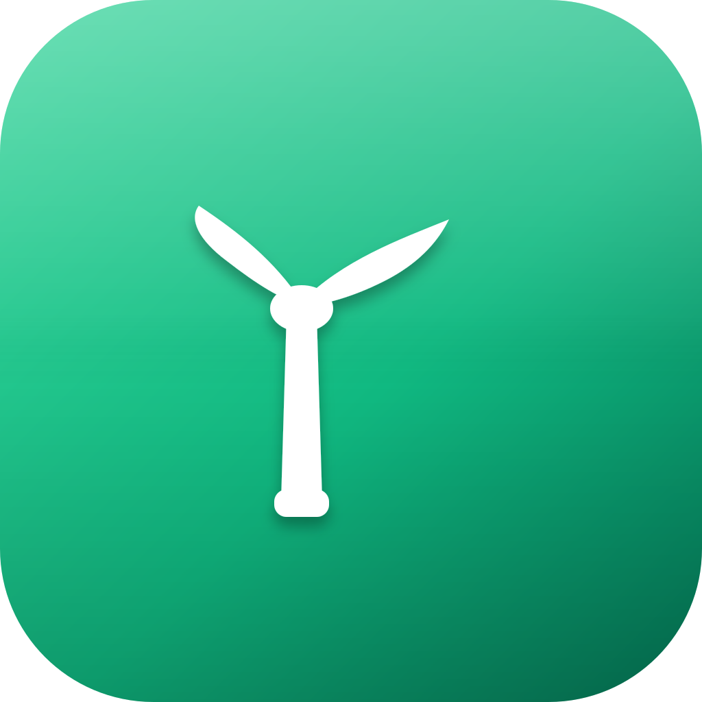

کاوشگر
📂
یک پوشه باز کنید

▶ اجرا
■ توقف
📂 باز کردن
💾 ذخیره
⚙ تنظیمات
⌨ میانبرها
آماده
خروجی برنامه در اینجا نمایش داده میشود…
تنظیمات
مسیر مفسر کلنگ:
...
مسیر لینتر کلنگ:
...
ذخیره
انصراف
میانبرهای صفحهکلید
Ctrl/Cmd+Enter
اجرای برنامه
Ctrl/Cmd+S
ذخیره فایل
Ctrl/Cmd+O
باز کردن فایل
Ctrl/Cmd+,
تنظیمات
Ctrl/Cmd+Z
بازگشت
Ctrl/Cmd+Shift+Z
از نو
Ctrl/Cmd+F
جستجو
Tab
تورفتگی
Ctrl/Cmd+Shift+[
تا کردن کد
Ctrl/Cmd+Shift+]
باز کردن کد
Ctrl/Cmd+Space
تکمیل خودکار
Ctrl/Cmd+Alt+↑/↓
افزودن مکاننمای بالا/پایین
Ctrl/Cmd+D
انتخاب تکرار بعدی
Ctrl/Cmd+Click
افزودن مکاننما
F8
خطای بعدی
Ctrl/Cmd+Shift+M
پنل خطاها
بستن